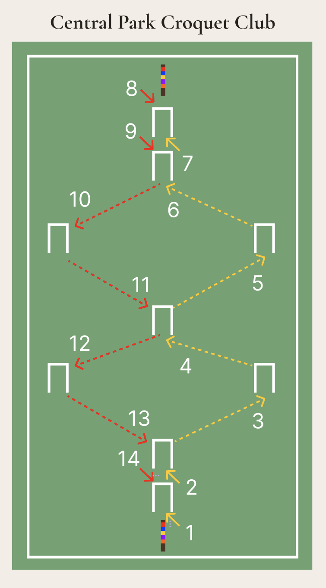

Rules of the Game
Official rules adapted from Croquet America. Nine-wicket croquet is naturally a less formal game than the six-wicket version of the sport.
Nine-Wicket Layout

Diagram shows the standard nine-wicket, two-stake layout. Court dimensions can be scaled to fit your playing area.
The Court & Equipment
The standard court dimensions are 100 feet by 50 feet, though the court can be scaled to fit any available space. The game uses nine wickets, two stakes, and four or eight balls. Each player needs a mallet, though mallets can be shared between turns.
Recommended equipment includes adult-sized sets with sturdy wickets, three-foot mallets, and heavy solid plastic balls for the best playing experience.
Game Outline
The object is to maneuver the balls through the course of wickets and into the finishing stake. You can play in singles or doubles. In doubles, the fist shooter pairs with the last shooter, the second shooter pairs with the second to last shooter, and so forth.
The play sequence repeats throughout the game. Each turn begins with one stroke, but extra strokes are earned when the striker ball hits another ball or scores a wicket point.
Starting a Game
The winner of the coin toss selects which colors to play; players go in order from the colors on the stake. All balls enter the court from a point halfway between the finishing stake and wicket #1.
If the court has been scaled down, maintain a minimum distance of 6 feet between the starting point and the first wicket.
Scoring a Wicket
A ball scores a wicket by passing through it in the correct direction and in the proper sequence as shown in the course diagram. The ball must completely clear the plane of the playing side of the wicket to score the point.
Scoring a wicket earns the striker one continuation stroke.
Hitting Other Balls
When the striker ball hits another live ball, this is called a roquet. The striker then takes croquet — placing their ball in relation to the roqueted ball and striking. There are four methods of taking croquet:
Option 1
Place the striker ball in contact with the roqueted ball and strike the striker ball so that both balls move.
Option 2
Place the striker ball in contact with the roqueted ball, hold the striker ball firm by placing a foot on it, then strike so the roqueted ball moves.
Option 3
Place the striker ball within a mallet's head (approximately 9 inches) of the roqueted ball, then strike the striker ball.
Option 4
Take one extra strokes from where the striker ball lies, without moving the roqueted ball.
After taking croquet, the roqueted ball becomes dead to the striker. It remains dead until the striker ball scores its next wicket or stake point, at which point all balls become live again. Hitting a dead ball earns no extra stroke.
A player can only get a continuation stroke once a turn for roqueting a ball. A second roquet in the same turn earns no additional stroke.
Boundaries
Court boundaries should be marked with string, chalk, flags, or other clear markers.
Any ball that crosses the boundary is placed back in the court three feet from the point where it crossed (or the length of a mallet from the boundary, whichever is standard for your court size).
Wicket and Hit
The striker ball can both score a wicket and make a roquet on the same stroke. However, continuation strokes are not cumulative.
If the ball scores a wicket and then hits another ball, the wicket counts and the striker earns a continuation stroke and the hit counts as a roquet if it is the first of the striker's turn. If the ball hits another ball before clearing the wicket, it is a roquet and the wicket if the stiker plays it as it lies and does not move the ball back to roquet.
Turning Stake
A ball scores the turning stake by hitting it in the correct sequence — after passing through wicket #7 on the outward journey. Scoring the turning stake earns one continuation stroke and makes all balls live again for the return journey.
Continuation Strokes
Extra strokes are earned for scoring a wicket, scoring the turning stake, or taking croquet. In general, continuation strokes are not cumulative.
Special rules for continuation strokes:
- Roquet while taking croquet: No continuation stroke is earned; the striker immediately takes croquet from the newly roqueted ball.
- Scoring a wicket and turning stake simultaneously: The striker earns one continuation stroke (not two).
- Scoring two wickets on one stroke: The striker earns two continuation strokes. However, if the first continuation stroke scores a point or makes a roquet, the second continuation stroke is forfeited.
Rover Balls & Finishing Stake
A ball that has scored all the wicket points except the finishing stake is called a rover ball. A rover ball may roquet each other ball no more than once per turn.
Any rover ball that hits the finishing stake is removed from the game. Play continues in the usual sequence, skipping over the removed ball.
In singles, the game ends when the first ball scores the finishing stake, but you can continue playing until more balls hit the finishing stake. In doubles, the game ends when both balls of one side have scored the finishing stake.
Stake and Hit
Similar to the "wicket and hit" rule, the striker ball can both score the finishing stake and make a roquet on the same stroke. Whichever happens first takes precedence.
Variations
The following variations can be adopted to change the dynamics of play. Agree on any variations before starting the game.
Out-of-Bounds Penalty
The striker's turn ends immediately if any ball (except the striker ball during a roquet) goes out of bounds during a stroke.
Carry-Over Deadness
Roqueted balls remain dead not just for the current turn, but until the striker ball scores its next wicket or stake point. A deadness board or paper tracking is recommended when playing with this variation.
Triples
Six balls are used with two sides: blue, black, and green versus red, yellow, and orange. The play sequence becomes: blue, red, black, yellow, green, orange.
Poison
Rover balls become "poison" balls. A poison ball can eliminate opponent balls by hitting them, or by an opponent running their ball through a wicket. Typically played as a cutthroat (every player for themselves) game.
Ready to play?